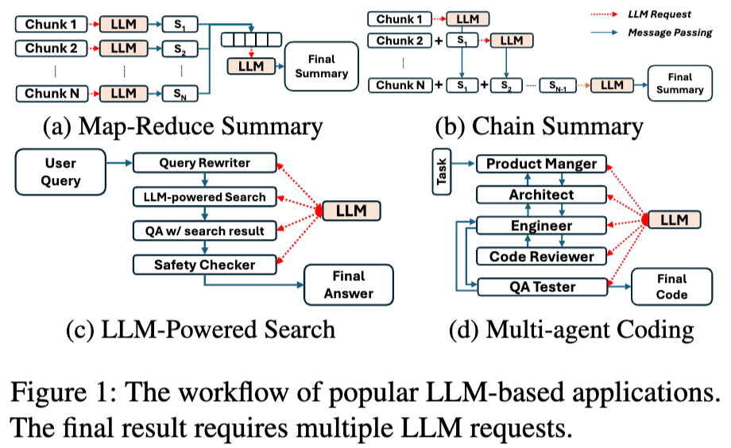
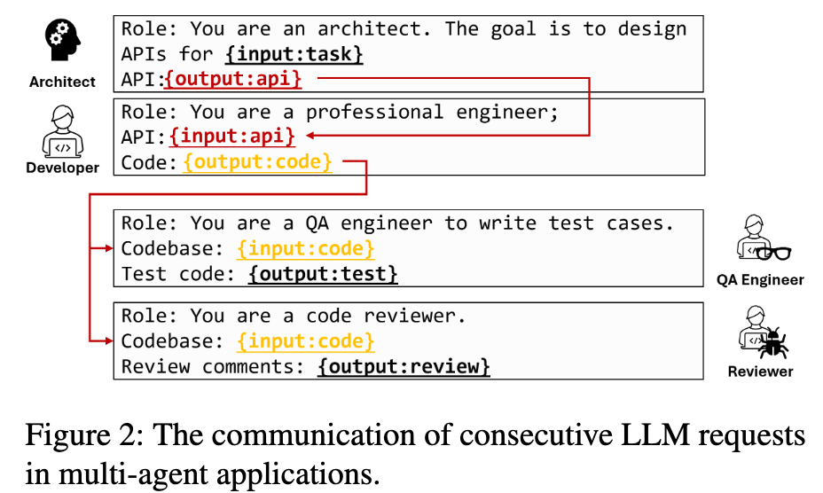
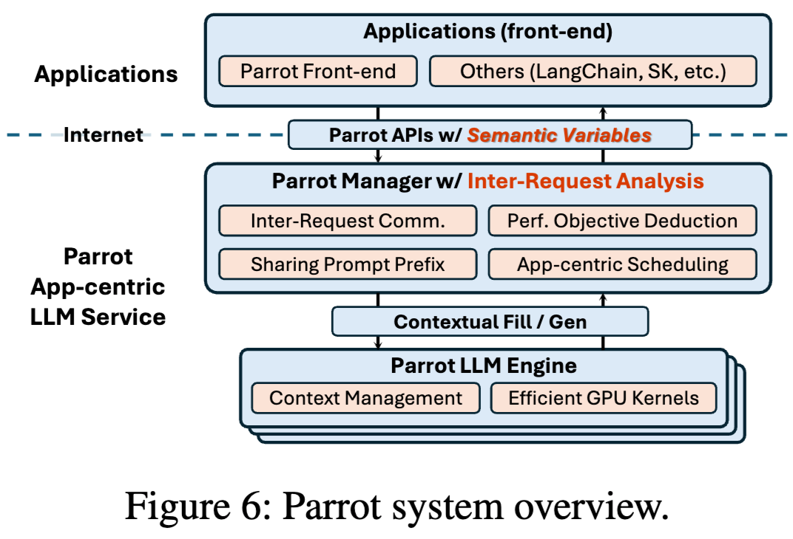
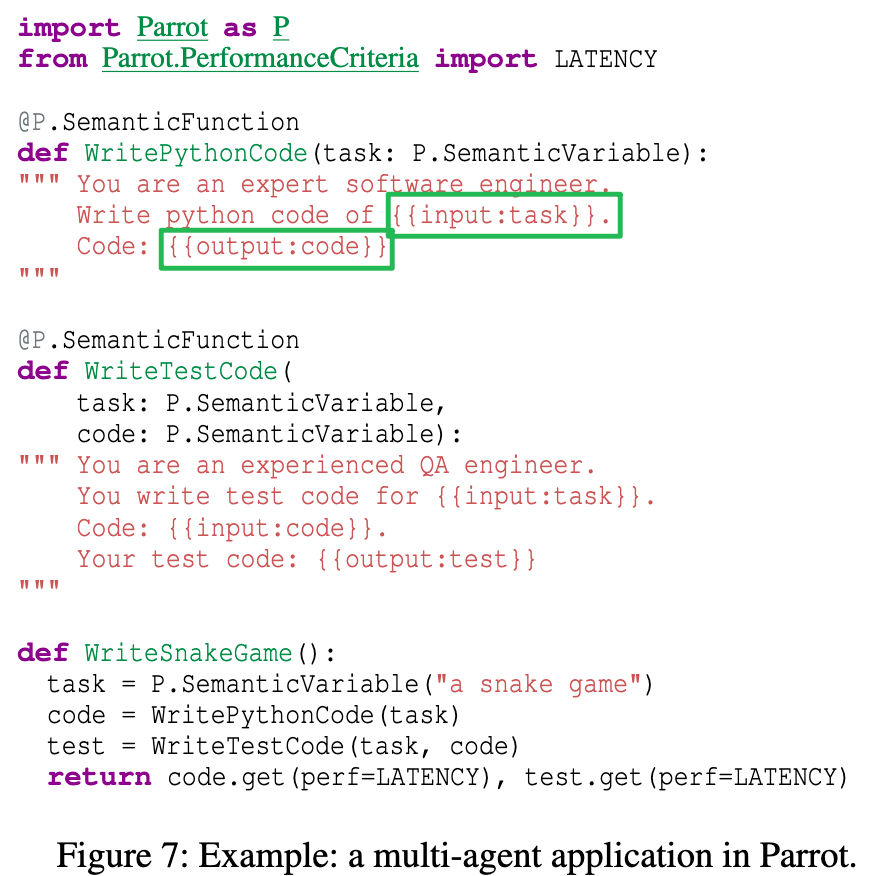

LLM推理服务论文
记录一些LLM推理优化相关的论文
Parrot [OSDI ‘24]
Parrot: Efficient Serving of LLM-based Applications with Semantic Variable. pdf code author
Parrot这篇论文的主要贡献是提出了一个全新的推理workload：LLM Applications。
LLM Application是使用LLM来完成特定的任务（摘要，搜索，代码助手等），在一个应用中通常包含多个LLM请求。

以往推理优化系统是request-centric，即对用户的应用是透明的，“一视同仁”的处理用户的请求，缺少application-level的信息。
在LLM Application中，请求具有以下特点：
- 多个连续的LLM请求可能存在依赖关系。
- 即使在单个应用中，LLM请求可能具有不同的调度偏好。
- LLM的请求之前存在大量的相似性。

由于缺少application-level的信息，现有的推理优化主要有两个问题：
- 网络通信开销。
- 任务调度等待开销。


Parrot设计了一个Semantic Variables的编程抽象，用来将用户的执行逻辑暴露给推理服务端。
基于这个Semantic Variables可以获取到应用内的LLM请求的调用依赖关系，进而做一些系统上的优化，包括DAG-based analysis，Performance Objective Deduction，Application-Centric Scheduling等。

AquaPipe [SIGMOD ‘25]
Sparse Attention
Longformer [Arxiv ‘20]
Streaming LLM [ICLR ‘24]
解决的问题
LLM在长上下文的效率和效益的问题：
- 长上下文的计算和内存开销大。
- LLM在上下文长度超过预训练长度时，生成质量差。
核心idea

- Dense Attention：计算复杂度高，当上下文长度超过预训练长度，模型表现差。
- Window Attention：计算复杂度低，当上下文长度超过缓存长度（initial token）被驱逐时，模型表现差。
- Sliding Window w/ Re-computation：计算复杂度中等，通过重新计算，保留了initial token的影响，模型表现良好。
- StreamingLLM：在Window Attention的基础上，引入了对initial token的注意力计算，兼顾推理速度和模型生成质量。
Streamllm的方法主要来自于一个观察：
”Attention sink“：作者发现LLM对初始token的注意力关注较高。

作者对Attention sink给了一个解释：
LLM的注意力计算，保证所有token的注意力之和为1，即使当前token只需要根据自己就可以推测出下一个token，由于softmax的设计，还是需要将一些注意力分散到其他token上去。
由于LLM的自回归特性，开始的token可以被后面所有tokne注意力到，因此LLM对initial token的关注更高，进而在训练的过程中，赋予inital token特殊的含义。